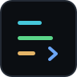

<!DOCTYPE html>
<html lang="en">
<head>
<meta charset="utf-8" />
<meta name="viewport" content="width=device-width, initial-scale=1" />
<title>mrx — Multi-Role Model Orchestration CLI</title>
<meta name="description" content="Assign different LLMs to different roles in a single interactive session. Mix Ollama, OpenAI, Anthropic, Gemini, LM Studio and OpenRouter from one config file." />
<link rel="stylesheet" href="./styles.css" />
<style>
  * { box-sizing: border-box; margin: 0; padding: 0; }
  html { scroll-behavior: smooth; }
  body {
    background: var(--bg-canvas);
    font-family: var(--font-mono);
    color: var(--text-body);
    min-height: 100vh;
  }
  a { color: inherit; text-decoration: none; }
  a:hover { color: var(--text-bright); }
  code { font-family: var(--font-mono); }
</style>
</head>
<body>
  <div id="root"></div>
  <script src="https://unpkg.com/react@18.3.1/umd/react.development.js" crossorigin="anonymous"></script>
  <script src="https://unpkg.com/react-dom@18.3.1/umd/react-dom.development.js" crossorigin="anonymous"></script>
  <script src="https://unpkg.com/@babel/standalone@7.29.0/babel.min.js" crossorigin="anonymous"></script>
  <script src="./_ds_bundle.js"></script>
  <script type="text/babel">
const { useState, useEffect } = React;
const NS = window.MrxDesignSystem_1d8204;
const { Button, Badge, RoleTag, CodeBlock, StatusBar, MessageBubble, KeyHint } = NS;

const MAXW = 1120;

function Eyebrow({ children, color = 'var(--brand)' }) {
  return (
    <div style={{ display: 'flex', alignItems: 'center', gap: 10, marginBottom: 16 }}>
      <span style={{ width: 22, height: 1, background: color }} />
      <span style={{ fontSize: 'var(--text-2xs)', letterSpacing: 'var(--tracking-caps)', textTransform: 'uppercase', color }}>{children}</span>
    </div>
  );
}

function Section({ children, style }) {
  return (
    <section style={{ maxWidth: MAXW, margin: '0 auto', padding: '0 32px', ...style }}>{children}</section>
  );
}

function Nav() {
  const links = ['Modes', 'Providers', 'Docs'];
  return (
    <nav style={{ position: 'sticky', top: 0, zIndex: 10, background: 'rgba(11,14,18,0.82)', backdropFilter: 'blur(10px)', borderBottom: '1px solid var(--border-hair)' }}>
      <div style={{ maxWidth: MAXW, margin: '0 auto', padding: '14px 32px', display: 'flex', alignItems: 'center', gap: 18 }}>
        <a href="#" style={{ display: 'flex', alignItems: 'center', gap: 10 }}>
          
          <span style={{ fontWeight: 700, fontSize: 'var(--text-md)', color: 'var(--text-bright)' }}>mrx</span>
          <Badge tone="neutral" style={{ marginLeft: 2 }}>v0.1.0</Badge>
        </a>
        <div style={{ marginLeft: 'auto', display: 'flex', alignItems: 'center', gap: 22 }}>
          {links.map((l) => (
            <a key={l} href={`#${l.toLowerCase()}`} style={{ fontSize: 'var(--text-xs)', color: 'var(--text-muted)' }}>{l}</a>
          ))}
          <a href="https://github.com/Varun-SV/mrx" target="_blank" rel="noopener" style={{ fontSize: 'var(--text-xs)', color: 'var(--text-muted)' }}>GitHub ↗</a>
          <Button variant="primary" size="sm" prefix="›" onClick={() => window.open('https://github.com/Varun-SV/mrx', '_blank')}>npm i -g mrx</Button>
        </div>
      </div>
    </nav>
  );
}

function HeroTerminal() {
  return (
    <div style={{ border: '1px solid var(--border-strong)', borderRadius: 'var(--radius-lg)', overflow: 'hidden', background: 'var(--bg-canvas)', boxShadow: 'var(--glow-brand), var(--shadow-lg)' }}>
      <div style={{ display: 'flex', alignItems: 'center', gap: 10, padding: '9px 14px', background: 'var(--bg-panel)', borderBottom: '1px solid var(--border-default)' }}>
        <span style={{ display: 'inline-flex', gap: 7 }}>
          <i style={{ width: 11, height: 11, borderRadius: '50%', background: '#F0757E', display: 'inline-block' }} />
          <i style={{ width: 11, height: 11, borderRadius: '50%', background: '#E5B567', display: 'inline-block' }} />
          <i style={{ width: 11, height: 11, borderRadius: '50%', background: '#5BD68A', display: 'inline-block' }} />
        </span>
        <span style={{ margin: '0 auto', fontSize: 'var(--text-2xs)', letterSpacing: 'var(--tracking-wide)', color: 'var(--text-faint)' }}>mrx — chat</span>
        <span style={{ width: 44 }} />
      </div>
      <div style={{ padding: 16, display: 'flex', flexDirection: 'column', gap: 14 }}>
        <StatusBar mode="think_then_answer" reasoner="ollama/qwen3:14b" executor="openai/gpt-4o-mini" loading />
        <MessageBubble role="user">design a REST API for a todo app</MessageBubble>
        <MessageBubble role="reasoner">the user wants CRUD endpoints with clear status codes…</MessageBubble>
        <MessageBubble role="executor" streaming>{'A todo resource needs five routes:\n  GET /todos · POST /todos · GET/PATCH/DELETE /todos/:id'}</MessageBubble>
        <div style={{ display: 'flex', alignItems: 'center', gap: 8, borderTop: '1px solid var(--border-hair)', paddingTop: 12 }}>
          <span style={{ color: 'var(--brand)', fontWeight: 600 }}>&gt;</span>
          <span style={{ color: 'var(--text-faint)', fontSize: 'var(--text-sm)' }}>@reasoner what about pagination?</span>
          <span style={{ width: 7, height: 16, background: 'var(--brand)', marginLeft: -2, display: 'inline-block' }} />
        </div>
      </div>
    </div>
  );
}

function Hero() {
  return (
    <Section style={{ paddingTop: 80, paddingBottom: 96 }}>
      <div style={{ display: 'grid', gridTemplateColumns: '1fr 1fr', gap: 56, alignItems: 'center' }}>
        <div>
          <Eyebrow>Multi-role model orchestration CLI</Eyebrow>
          <h1 style={{ fontFamily: 'var(--font-display)', fontWeight: 700, fontSize: 'clamp(2rem, 5vw, var(--text-3xl))', lineHeight: 'var(--leading-tight)', letterSpacing: 'var(--tracking-tight)', color: 'var(--text-bright)', margin: '0 0 22px' }}>
            Assign different LLMs to <span style={{ color: 'var(--role-reasoner)' }}>different roles</span>.
          </h1>
          <p style={{ fontSize: 'var(--text-md)', lineHeight: 'var(--leading-relaxed)', color: 'var(--text-muted)', maxWidth: '46ch', margin: '0 0 28px' }}>
            A reasoner for planning, an executor for output, a tool caller for the world —
            in a single interactive session. Mix Ollama, OpenAI, Anthropic, Gemini, LM Studio
            and OpenRouter from one config file.
          </p>
          <div style={{ display: 'flex', gap: 12, marginBottom: 24, flexWrap: 'wrap' }}>
            <Button variant="primary" prefix="›" size="lg" onClick={() => document.getElementById('install').scrollIntoView({ behavior: 'smooth' })}>Get started</Button>
            <Button variant="secondary" size="lg" onClick={() => window.open('https://github.com/Varun-SV/mrx', '_blank')}>Read the docs</Button>
          </div>
          <div style={{ maxWidth: 360 }}>
            <CodeBlock label="bash" chrome>{'npm install -g mrx\nmrx ask "explain recursion"'}</CodeBlock>
          </div>
        </div>
        <HeroTerminal />
      </div>
    </Section>
  );
}

const WHY = [
  { t: 'Role separation', c: 'var(--role-reasoner)', d: 'Use a powerful reasoning model for planning and a fast executor for output. Stop paying reasoning prices for every token.' },
  { t: 'Provider-agnostic', c: 'var(--role-executor)', d: 'Mix Ollama, OpenAI, Anthropic, Google Gemini, LM Studio and OpenRouter in the same session. One config file, zero vendor lock-in.' },
  { t: 'Zero lock-in', c: 'var(--role-tool)', d: 'Fully open source (MIT). Your config, your models, your data. Run entirely local with Ollama, or route to frontier APIs.' },
];

function Why() {
  return (
    <Section style={{ paddingBottom: 96 }}>
      <Eyebrow color="var(--role-executor)">Why mrx</Eyebrow>
      <div style={{ display: 'grid', gridTemplateColumns: 'repeat(auto-fit, minmax(280px, 1fr))', gap: 16 }}>
        {WHY.map((w, i) => (
          <div key={w.t} style={{ background: 'var(--surface-card)', border: '1px solid var(--border-default)', borderTop: `2px solid ${w.c}`, borderRadius: 'var(--radius-md)', padding: 24 }}>
            <div style={{ fontSize: 'var(--text-2xs)', color: 'var(--text-ghost)', marginBottom: 14 }}>0{i + 1}</div>
            <h3 style={{ margin: '0 0 10px', fontSize: 'var(--text-lg)', fontWeight: 600, color: 'var(--text-bright)' }}>{w.t}</h3>
            <p style={{ margin: 0, fontSize: 'var(--text-sm)', lineHeight: 'var(--leading-relaxed)', color: 'var(--text-muted)' }}>{w.d}</p>
          </div>
        ))}
      </div>
    </Section>
  );
}

const MODES = [
  {
    role: 'reasoner', name: 'think_then_answer', tag: 'default',
    blurb: 'The reasoner thinks through the problem inside <thinking> tags. The executor then writes the user-facing response using that reasoning as context.',
    diagram: 'user\n  │\n  ▼\n[ reasoner ]  ← <thinking>…\n  │ conclusion\n  ▼\n[ executor ]  → final answer',
  },
  {
    role: 'executor', name: 'planner_executor', tag: 'multi-step',
    blurb: 'The reasoner produces a numbered plan. The executor runs each step in sequence — passing prior results forward — then synthesizes a final answer.',
    diagram: 'user\n  │\n  ▼\n[ reasoner ]  → 1. 2. 3.\n  ├─ step 1 → executor\n  ├─ step 2 → executor\n  └─ step 3 → executor\n         ▼  synthesize',
  },
  {
    role: 'tool_caller', name: 'manual', tag: 'power user',
    blurb: 'You route every message yourself with an @prefix. No prefix falls through to the executor — explicit control over which model handles what.',
    diagram: '@reasoner …  → reasoner\n@executor …  → executor\n@tool_caller → tool_caller\n(no prefix)  → executor',
  },
];

function ModesSection() {
  return (
    <Section style={{ paddingBottom: 96 }}>
      <a id="modes" />
      <Eyebrow color="var(--role-reasoner)">Interaction modes</Eyebrow>
      <h2 style={{ fontFamily: 'var(--font-display)', fontSize: 'var(--text-2xl)', fontWeight: 700, letterSpacing: 'var(--tracking-tight)', color: 'var(--text-bright)', margin: '0 0 8px' }}>Three ways to route a turn.</h2>
      <p style={{ fontSize: 'var(--text-sm)', color: 'var(--text-muted)', margin: '0 0 32px', maxWidth: '60ch' }}>Switch any time with <code style={{ color: 'var(--brand)' }}>--mode</code> or <code style={{ color: 'var(--brand)' }}>Ctrl+M</code> in the TUI.</p>
      <div style={{ display: 'grid', gridTemplateColumns: 'repeat(auto-fit, minmax(280px, 1fr))', gap: 16 }}>
        {MODES.map((m) => (
          <div key={m.name} style={{ background: 'var(--surface-card)', border: '1px solid var(--border-default)', borderRadius: 'var(--radius-md)', overflow: 'hidden', display: 'flex', flexDirection: 'column' }}>
            <div style={{ display: 'flex', alignItems: 'center', gap: 8, padding: '12px 16px', borderBottom: '1px solid var(--border-hair)' }}>
              <RoleTag role={m.role} filled />
              <Badge tone="neutral" style={{ marginLeft: 'auto' }}>{m.tag}</Badge>
            </div>
            <div style={{ padding: 16, display: 'flex', flexDirection: 'column', gap: 14, flex: 1 }}>
              <code style={{ fontSize: 'var(--text-sm)', color: 'var(--text-bright)', fontWeight: 600 }}>{m.name}</code>
              <p style={{ margin: 0, fontSize: 'var(--text-xs)', lineHeight: 'var(--leading-relaxed)', color: 'var(--text-muted)' }}>{m.blurb}</p>
              <pre style={{ margin: '4px 0 0', padding: 12, background: 'var(--bg-canvas)', border: '1px solid var(--border-hair)', borderRadius: 'var(--radius-sm)', fontSize: 11, lineHeight: 1.5, color: 'var(--text-faint)', overflowX: 'auto' }}>{m.diagram}</pre>
            </div>
          </div>
        ))}
      </div>
    </Section>
  );
}

const PROVIDERS = [
  { n: 'Ollama', e: '(none)', s: 'ollama pull qwen3:8b', local: true },
  { n: 'OpenAI', e: 'OPENAI_API_KEY', s: 'platform.openai.com', local: false },
  { n: 'Anthropic', e: 'ANTHROPIC_API_KEY', s: 'console.anthropic.com', local: false },
  { n: 'Google Gemini', e: 'GOOGLE_API_KEY', s: 'aistudio.google.com', local: false },
  { n: 'LM Studio', e: '(none)', s: 'local server', local: true },
  { n: 'OpenRouter', e: 'OPENROUTER_API_KEY', s: 'openrouter.ai/keys', local: false },
];

function Providers() {
  return (
    <Section style={{ paddingBottom: 96 }}>
      <a id="providers" />
      <Eyebrow color="var(--role-tool)">Providers</Eyebrow>
      <h2 style={{ fontFamily: 'var(--font-display)', fontSize: 'var(--text-2xl)', fontWeight: 700, letterSpacing: 'var(--tracking-tight)', color: 'var(--text-bright)', margin: '0 0 28px' }}>One config. Zero vendor lock-in.</h2>
      <div style={{ display: 'grid', gridTemplateColumns: 'repeat(auto-fit, minmax(240px, 1fr))', gap: 12 }}>
        {PROVIDERS.map((p) => (
          <div key={p.n} style={{ background: 'var(--surface-card)', border: '1px solid var(--border-default)', borderRadius: 'var(--radius-md)', padding: '16px 18px', display: 'flex', flexDirection: 'column', gap: 8 }}>
            <div style={{ display: 'flex', alignItems: 'center', gap: 8 }}>
              <span style={{ fontSize: 'var(--text-base)', fontWeight: 600, color: 'var(--text-bright)' }}>{p.n}</span>
              {p.local
                ? <Badge tone="success" dot style={{ marginLeft: 'auto' }}>local</Badge>
                : <Badge tone="neutral" style={{ marginLeft: 'auto' }}>API key</Badge>}
            </div>
            <code style={{ fontSize: 'var(--text-2xs)', color: p.e === '(none)' ? 'var(--text-ghost)' : 'var(--role-tool)' }}>{p.e}</code>
            <span style={{ fontSize: 'var(--text-2xs)', color: 'var(--text-faint)' }}>{p.s}</span>
          </div>
        ))}
      </div>
    </Section>
  );
}

function Install() {
  return (
    <Section style={{ paddingBottom: 110 }}>
      <a id="install" />
      <div style={{ background: 'var(--bg-panel)', border: '1px solid var(--border-default)', borderRadius: 'var(--radius-lg)', padding: '48px 40px', textAlign: 'center', position: 'relative', overflow: 'hidden' }}>
        <div style={{ position: 'absolute', inset: 0, background: 'radial-gradient(500px 200px at 50% 0%, rgba(69,200,219,0.08), transparent 70%)', pointerEvents: 'none' }} />
        <Eyebrow color="var(--brand)">Get started</Eyebrow>
        <h2 style={{ fontFamily: 'var(--font-display)', fontSize: 'var(--text-2xl)', fontWeight: 700, color: 'var(--text-bright)', margin: '0 auto 14px', maxWidth: '20ch' }}>No config required. Defaults to Ollama.</h2>
        <p style={{ fontSize: 'var(--text-sm)', color: 'var(--text-muted)', margin: '0 auto 28px', maxWidth: '48ch' }}>Install globally, point it at your models, and start a session. Make sure <span style={{ color: 'var(--role-reasoner)' }}>ollama</span> is running locally.</p>
        <div style={{ maxWidth: 440, margin: '0 auto', position: 'relative' }}>
          <CodeBlock label="bash" chrome accent="brand">{'npm install -g mrx\nmrx chat'}</CodeBlock>
        </div>
        <div style={{ display: 'flex', gap: 18, justifyContent: 'center', marginTop: 26, flexWrap: 'wrap' }}>
          <KeyHint keys="Enter" label="send" />
          <KeyHint keys="Ctrl+M" label="mode" />
          <KeyHint keys="Ctrl+R" label="reasoning" />
          <KeyHint keys="Ctrl+C" label="quit" />
        </div>
      </div>
    </Section>
  );
}

function Footer() {
  return (
    <footer style={{ borderTop: '1px solid var(--border-hair)', padding: '28px 0' }}>
      <Section style={{ display: 'flex', alignItems: 'center', gap: 16, flexWrap: 'wrap' }}>
        
        <span style={{ fontSize: 'var(--text-xs)', color: 'var(--text-faint)' }}>mrx — Multi-Role Model Orchestration CLI</span>
        <a href="https://github.com/Varun-SV/mrx" target="_blank" rel="noopener" style={{ marginLeft: 'auto', fontSize: 'var(--text-2xs)', color: 'var(--text-ghost)' }}>MIT © Varun S V · github.com/Varun-SV/mrx</a>
      </Section>
    </footer>
  );
}

function Landing() {
  return (
    <div>
      <Nav />
      <Hero />
      <Why />
      <ModesSection />
      <Providers />
      <Install />
      <Footer />
    </div>
  );
}

ReactDOM.createRoot(document.getElementById('root')).render(<Landing />);
  </script>
</body>
</html>
